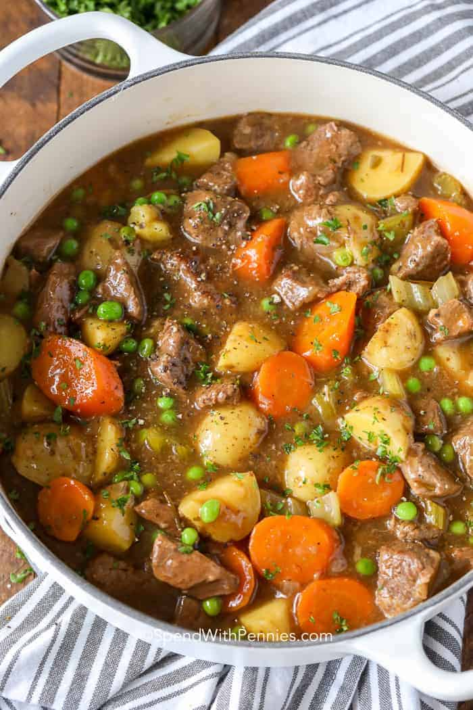

Hamburger

Description
Beef stew is a classic dinner staple in so many households around the world. There are soup and stew adaptations of beef stew like my favorite Easy Hamburger Soup and cultural variations like Hungarian Goulash, but this classic beef stew recipe is a favorite for me!
Searing the beef pieces before you add the stock makes such a difference in the flavor you get from the soup. It’s really the only chance you have to get that delicious caramelization on the meat!
Ingredients 8 servings
- 2 pounds stewing beef trimmed and cubed
- 3 tablespoons flour
- ½ teaspoon garlic powder
- ½ teaspoon salt
- ½ teaspoon black pepper
- 3 tablespoons olive oil
- 1 onion chopped
- 6 cups beef broth
- ½ cup red wine optional
- 1 pound potatoes peeled and cubed
- 4 carrots cut into 1 inch pieces
- 4 stalks celery cut into 1 inch pieces
- 3 tablespoons tomato paste
- 1 teaspoon dried rosemary or 1 sprig fresh
- 2 tablespoons cornstarch
- 2 tablespoons water
- ¾ cup peas
Steps
- Combine flour, garlic powder and salt & pepper. Toss beef in flour mixture.
- Heat olive oil in a large Dutch oven or pot. Cook the beef and onions until browned.
- Add beef broth and red wine while scraping up any brown bits in the pan.
- Stir in all remaining ingredients except for peas, cornstarch and water. Reduce heat to medium low, cover and simmer 1 hour or until beef is tender (up to 90 minutes).
- Mix equal parts cornstarch and water to create a slurry. Slowly add the slurry to the boiling stew to reach desired consistency (you may not need all of the slurry).
- Stir in peas and simmer 5-10 minutes before serving . Season with salt & pepper to taste.